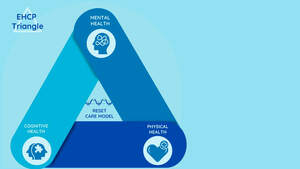

Trade Mark Journal No.2025/026 27 June 2025
UK00004212167 1 June 2025 (35,36,41,43,44,45)

- Class 35
- Health care cost management; Administration of prepaid health care plans; Health care cost review.
- Class 36
- Provision of finance for health care; Administration of pre-paid health care plans.
- Class 41
- Residential education courses; Education; Vocational education; Health education; Pre-school education; Education and training; Academies [education]; Education and instruction; Services of schools [education]; Education services; University education services; Education, teaching and training; Academy services (Education -); Education academy services; Academy education services; Vocational education and training services; Education (Religious -); Religious education; Music education; Education and instruction services; Training and education services; Education and training services; Education examination; Kindergarten services [education or entertainment]; Provision of education courses; Educational services for providing courses of education; Career counseling [education]; Teaching of diet education; Higher education services; Provision of education and training; Provision of training and education; Providing of education; Physical education; Entertainment, education and instruction services; Education academy services for teaching languages; Education academy services for teaching art history; Medical education services; Education services relating to vocational training; Computer education training; Education information; Information (Education -); Primary education services; Adult education services; Computer education training services; Linguistic education and training services; Boarding school education; Physical education instruction; Education and training consultancy; Primary education services relating to literacy; Further education; Vocational education relating to home safety; Vocational education relating to self-defence; Physical education services; Education academy services for teaching acting; Musical education services; Physical health education; Sports education services; Legal education services; Technological education services; Online education services; Providing continuing medical education courses; Lingual education; Management of education services; Management education services; Provision of physical education; Education services relating to nutrition; Education services related to the arts; Singing education; Education academy services for teaching construction drafting; Education services relating to health; Dietary education services; Providing continuing dental education courses; Education services relating to religion; Career counselling relating to education and training; Educational services provided by institutes of higher education; Vocational education in the field of mechanics; Education courses relating to automation; Club education services; Vocational education relating to personal safety; Education and training in the field of music and entertainment; Education and training services in the field of occupational health and safety; Adult education services relating to medicine; Providing continuing nursing education courses; Research in the field of education; Adult education services relating to finance; Education and training in the field of occupational health and safety; Guidance (Vocational -) [education or training advice]; Vocational guidance [education or training advice]; Education services for imparting language teaching methods; Education information services; Secondary school educational services; Sporting education services; Education services relating to medicine; Education, entertainment and sport services; Educational and teaching services; Education services relating to business training; Education courses relating to the travel industry; Training or education services in the field of life coaching; Career counselling [training and education advice]; Providing continuing legal education courses; Education services relating to the veterinary profession; Vocational education relating to first aid; Adult education services relating to law; Education in the field of computing; Blindness prevention education services; Education services relating to yoga; Vocational education for young people; Provision of education courses relating to electronics; Education services relating to conservation; Adult education services relating to commerce; Education, entertainment and sports; Education services relating to music; Education services in the nature of courses at the university level; Education in the field of occupational health and safety; Career advisory services (education or training advice); Adult education services relating to banking; Education in the field of computing science; English language education services; Provision of education courses relating to telecommunications; Education services relating to commerce; Education services relating to industry; Adult education services relating to pharmacy; Education services relating to hygiene; Provision of facilities for education; Residential education courses relating to archery; Education services relating to the cinema; Educational services provided by institutes of further education; Organization of education competitions; Adult education services relating to management; Provision of education courses relating to computers; Education in movement awareness; Education services relating to fashion; Education services relating to photography; Organization of competitions [education or entertainment]; Competitions (Organization of -) [education or entertainment]; Organization of competitions for education or entertainment; Education services relating to banking; Education services relating to pharmacy; Education services relating to sports; Adult education services relating to auditing; Educational and training services relating to healthcare; Education services relating to conservation of the environment; Education services relating to food technology; Foreign language education services; Providing education courses relating to the travel industry; Adult education services relating to accounting.
- Class 43
- Children's residential home services; Child care services; Child care centers; Provision of before-school care; Providing child care centers; Provision of after-school care.
- Class 44
- Respite care services in the nature of home nursing aid; Residential medical treatment services; Health care; Medical care; Nursing care; Managed health care services; Psychological care; Respite care (provision of); Health care consultancy services [medical]; Consultancy services relating to health care; Professional consultancy relating to health care.
- Class 45
- Foster care; Providing non-medical in-home care services for individuals.
Darren Logue